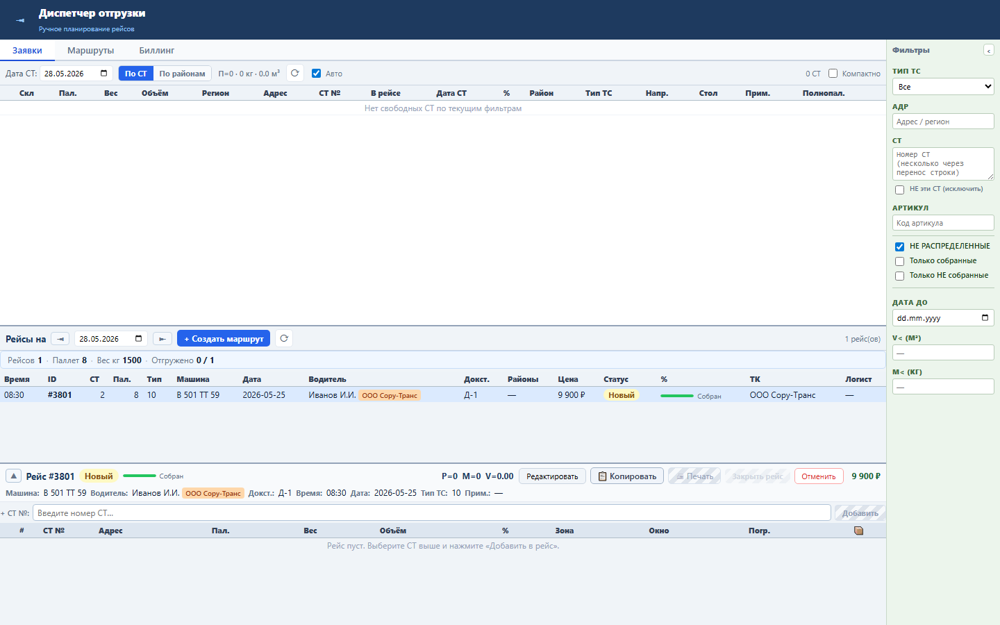
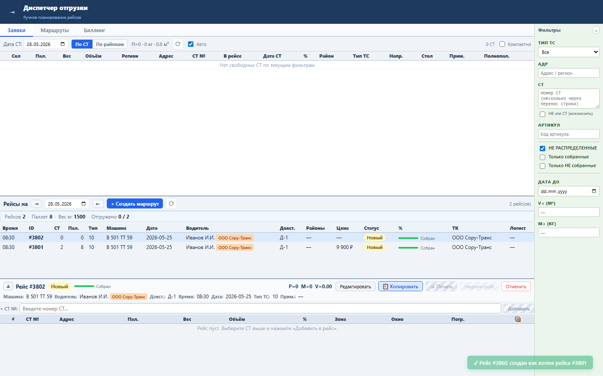

Блок нужен для повторяющихся маршрутов: диспетчер создаёт новый рейс с теми же реквизитами, но без состава СТ.
Копирование выполняет POST /tasks с типом и датой, затем PATCH /tasks/{id} для машины, водителя, дока и времени. СТ, цена и счёт не копируются.
Новый рейс выбран в интерфейсе, готов к наполнению СТ и не связан с биллингом исходного рейса.


Проверка: functional, UI smoke и no-mutation load gate пройдены.